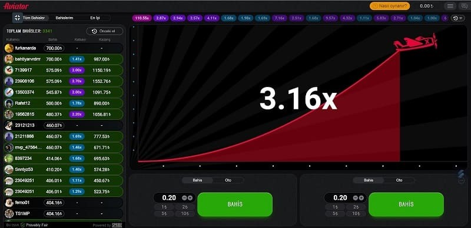
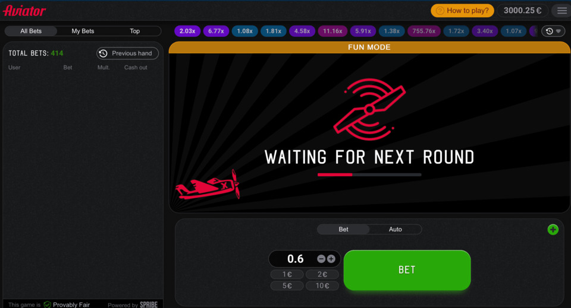
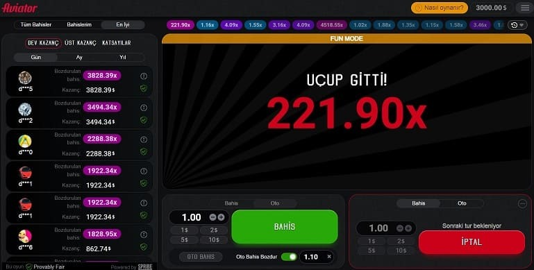

Aviator Oyunu, Spribe tarafından geliştirilen hızlı bir mini slot oyunudur. İster deneyimli bir oyuncu olun, ister çevrimiçi oyun dünyasına dalmak isteyen bir acemi olun, Aviator Oyunu hakkında bilmeniz gereken her şeyi öğrenmenize yardımcı olacak kapsamlı bir rehber hazırladık.
Bu kılavuzu kullanarak, Türkiye'deki Aviator Oyunu ile ilgili tüm sorularınızı, özelliklerini, yazılım sürümlerini, bahis miktarlarını, potansiyel kazançlarını ve diğer özelliklerini kapsayacak şekilde ele alacağız.
Aviator Oyunu için tüm önemli bilgileri içeren bir tablo görelim:
| Özellik | Tarif |
| Geliştirici | Arjantin |
| Yazılım Sürümleri | 2019, 2021 |
| Oyun Kategorisi | Hızlı Mini Yuva |
| Minimum Aviator Bahis Tutarı | 2 TL |
| Bahis Başına Maksimum Kazanç | 25.000 TL |
| Ek İşlevler | Otomatik Oynat, İstatistikler |
| Oyuncuya Dön (RTP) | 97% |
| Oyun içi sohbet | Mevcut |
| Ücretsiz Aviator Bahsi özelliği | Mevcut |
| Jackpot yarışması | Mevcut |
| Demo sürümü | Mevcut |
| Nakit çıkışı kontrolü | Oyuncu tarafından kararlaştırıldı |
Aviator gerçek para için oyun
Bu eşsiz ve heyecan verici oyun, sanal casino dünyasında kayda değer bir başarı olan Aviator oyununu oynayarak çok para kazanma fırsatı sunuyor. Hızlı temposu ve yüksek getirileri ile Aviator, sosyal oyuncular ve ciddi kumarbazlar arasında popülerdir. İşte bu kadar iyi bir para oyunu olmasının birkaç nedeni:
Yüksek Çarpanlar: Bahsinizi 100 kata kadar çarpabilir. 25 TL 'lık mütevazı bir bahis, 250 TL, 1200 TL ve hatta 2500 TL' lık kazançlar sağlayabilir.
Kanıtlanabilir Adil Teknoloji: Her oyunda% 100 adalet sağlayarak Aviator hilesi sorunları olasılığını ortadan kaldırır.
Oyuncu Kontrolü: Her oyuncunun katıldığı tur tamamen kendi kontrolü altındadır.
Merkezi Olmayan Sonuç Oluşturma: Sonuçlar, casino sunucusu tarafından değil, oyundaki diğer oyuncular tarafından belirlenir.
SHA-512 Karması: Bu güvenli şifreleme algoritması, oyunun her turunun adil ve doğru olmasını sağlar.
Sadelik ve Strateji: Kazanmak sadece şansa dayalı değildir. Oyuncular, uçağın yörüngesini gözlemleyerek ve oyunun kurallarına uyarak bahis stratejilerini optimize edebilirler. Aviator Oyun Yorumları
Aviator oyunu yorumlar
Aviator, her çizgiden oyuncudan çeşitli görüş ve incelemeler alan büyüleyici bir oyundur. İşte dünya çapındaki oyuncuların görüş ve incelemelerinden bazıları:
Profesyonel:
Heyecan: Oyuncular uçağın uçuşunu izlerken ve kazançları beklerken adrenalin patlaması sağlar.- Etkileyici Görseller ve Sesler: Yüksek kaliteli grafikler ve ses efektleri oyunun keyfine katkıda bulunur.
- Hızlı ve Yüksek Kazançlar: Oyun, oyuncuların bahislerini bir dakika içinde 50 kata kadar artırmalarını sağlar.
Eksi -lerini:
- Yüksek Risk: Oyun, uçağın uçuşunun öngörülemezliği nedeniyle oldukça riskli olabilir, bu da aniden sona erebilir ve Aviator bahsini kaybetme şansını artırabilir.
Aşağıda, her oyuncu tarafından anlaşılması gereken oyun dinamiklerini açıklayan bir tablo bulunmaktadır:
| Aviator Oyun Dinamiği | Tarif |
| Uçuş Yolu | Uçuş süresi arttıkça potansiyel kazançları gösteren kavisli grafik. |
| Öngörülemezlik | Uçuş zamanlamasını tahmin etmenin bir yolu yok, oyunun heyecanına ve riskine katkıda bulunuyor. |
| Zamanlama | Oyuncular uçak düşmeden önce oyunu durdurmalı, beceriye, sezgiye ve şansa ihtiyaç duymalıdır. |
| Kayıp | Zamanlamadaki başarısızlık bahis kaybına neden olur. Heyecan verici ama riskli. |
Oyun Aviator kuralları
Herkes Aviator'u oynayabilir, bir bahis koymayı ve bir uçak uçmadan önce para kazanmak için kazanmayı içeren basit ve heyecan verici bir oyun. Uçak ekranda ne kadar uzun süre kalırsa, o kadar çok kazanırsınız.
Aşağıdaki adımlar Aviator oynarken size rehberlik edecektir:
- Bir Aviator bahsi koyun. Bahsinizin miktarı 2 ila 2500 TL arasında değişebilir.
- Uçağın kalkışını izleyin. Başlangıçta, uçağın değeri 1x olacak, ancak uçtukça değer artacak.
- Nakit çıkışı. "Cash Out" butonuna tıklayarak nakit çıkışı yapabilirsiniz. Uçağın mevcut değeri kazancınızı aşarsa, kazancınız bu miktarla çarpılır.
Uçak para çekmeden önce uçarsa para kaybedebilirsiniz.
İşte Aviator oynamak için bazı ipuçları:
- Küçük bahislerle başlayıp yavaş yavaş artırarak oyunda rahat olun.
- Uçağın hızına dikkat etmek önemlidir. Uçak çok hızlı uçuyorsa, muhtemelen para çekme şansınızı kaçıracaksınız.
- Küçük bir kazanç elde etmek, tüm bahsinizi kaybetmekten daha iyidir, bu nedenle erken para kazanmaktan korkmayın.
Aviator oyunu hakkında bazı ek ayrıntılar:
- Bu oyunda adalet ve tarafsız sonuçlar sağlamak için rastgele sayı üreteçleri (RNG'ler) kullanılır.
- Uçak her an kalkabileceği için mümkün olan en kısa sürede para çekmeniz gerekir.
- Kazanabileceğiniz para miktarında bir sınır olmadan, ödüller muazzamdır.
Herkes Aviator'ın tadını çıkarabilir. Eğlenceli ve heyecan verici bir oyundur. Pratik yaparak, yakında büyük kazanmaya başlayabilirsiniz.
Aşağıdaki tabloda Aviator'un kuralları özetlenmektedir:
| Kural | Tarif |
| Bahis | İster 2 TL ister 2500 TL olsun, bu oyuna istediğiniz miktarda para koyabilirsiniz. |
| Uçağın kalkışını izleyin. | Başlangıçta, uçak 1x ile çarpılacak, ancak uçtukça artacaktır. |
| Nakde çevirme | Kazançlarınızı çekmek için "Cash Out" butonuna tıklayın. Uçağın değeri, çekmek istediğiniz miktarla çarpılacaktır. |
| Bahsinizi kaybedin | Uçak uçmadan önce nakde çevirmek kayıpla sonuçlanacaktır. |
Oyun Modları Aviator
İki farklı oyun modu ile Aviator, çeşitli oyunculara hitap ediyor. İster heyecan arayışında deneyimli bir oyuncu olun, ister yeni başlayan bir acemi olun, oyunda sizin için bir şeyler var.
1. Aviator Demo Sürümü (Aviator Mostbet)
Yeni başlayanlar ve tam sürüme geçmeden önce oyun hakkında bir fikir edinmek isteyenler için ücretsiz bir demo sürümü mevcuttur. Demo şu şekilde çalışır:
- Kayıt Gerekmez: Bir hesap oluşturmak veya para yatırmak zorunda olmadığınız için Aviator oynamaya başlamak kolaydır.
- Pratik Mükemmelleştirir: Oyunun işlevselliği hakkında daha fazla bilgi edinmek ve stratejilerinizi geliştirmek için ücretsiz demo sürümünü indirebilirsiniz.
- Sanal Para Birimi: Sanal para birimi, paranızı kullanmadan bahis oynamanıza izin verir, ancak kazançlar nakde çevrilemez.
Yeni Başlayanlar İçin İdeal: Bu mod özellikle Aviator ile başlıyorsanız yararlıdır.
2. Gerçek Para Modu
Gerçek para modunda, kendinize güvendiğinizde, gerçek parayla oynamak ve pratik yapmak arasında geçiş yapabilirsiniz.
- Giriş Gerekli: Gerçek parayla oynamak için hesabınızı doğrulamanız ve para yatırmanız gerekir.
- Gerçek Bahisler: Tüm bahisler gerçek para kullanılarak yapıldığı için bu modun ek bir heyecan unsuru vardır.
- Gerçek Kazançlar: Kazandığınız kazançlar ana bakiyenizden geçer, yani başarılı bahislerinizi gerçek paraya dönüştürerek kolayca çekebilirsiniz.
Aşağıda, her modun ana özelliklerini özetleyen bir tablo bulunmaktadır:
| Oyun Modu | Kayıt | Pey | Bahis Para Birimi | Kazançların Çekilmesi |
| Ücretsiz Demo Sürümü | Gerekli değil | Gerekli değil | Sanal para birimi | Mümkün değil |
| Gerçek Para Modu | Gerekli | Gerekli | Gerçek Para | Mümkün |
Geliştiricinin web sitesi Aviator Spribe'de, slotun tamamen işlevsel olan bir Aviator demo sürümünü indirebilirsiniz. İster sıradan bir Aviator oyunu ister gerçek bir bahis arıyor olun, Aviator'ın ihtiyaçlarınıza uygun bir modu vardır.
Güvenlik ve güvenilirlik Aviator
Online casino oyunları oynarken güvenlik ve güvenilirliği göz önünde bulundurmak zorunludur. Aviator'ın güvenlik ve güvenilirlik özelliklerine bakalım. Bir tablo, Aviator'un güvenlik ve güvenilirlik özelliklerini bir bakışta özetler:
| Özellik | Tarif |
| Veri Koruması | Kişisel bilgilerinize ve oturum açma bilgilerinize yetkisiz erişimi önlemek için, Aviator bunları güvence altına alır. |
| Güvenli İşlemler | Aviator ile güvenli bir bağlantı kullanarak bahis yapabilir ve para çekebilirsiniz. |
| Adalet | Aviator kanıtlanabilir adil algoritmalar kullandığından, Aviator hilesi sorunları yaşama şansı yoktur. |
| Kararlı Platform | Aviator ile oyuncular kesintisiz ve sorunsuz bir şekilde oynayabilecekler. |
| Tutarlı Güncellemeler | Aviator, düzenli güncellemelerle güvenliği, güvenilirliği ve etkileşimi korur. |
| Oyuncu Desteği | Oyuncular karşılaşabilecekleri herhangi bir sorun için Aviator müşteri desteği ile iletişime geçebilirler. |
Aviator Siteleri nedir?
Aviator'u çevrimiçi oynamak, çeşitli oyunlar, bonuslar ve özellikler sunan Aviator sitelerinde mümkündür. Aviator sitelerini istediğiniz zaman çevrimiçi olarak bulabilirsiniz. Acemi veya deneyimli bir oyuncu olmanız fark etmez; Aviator siteleri, heyecan verici oyunların tadını çıkarmak için mükemmel bir yerdir.
Aviator sitelerinde karşılaşacağınız ana unsurları inceleyelim:
| Aviator sitelerinde karşılaşabileceğiniz unsurlar | Tarif |
| Oyun Çeşitliliği | Aviator ve bir dizi diğer casino oyununu oynayın. |
| Bonuslar ve Ödüller | Hem yeni hem de mevcut oyuncular için teklifler ve promosyonlar |
| Güvenlik | Oyuncuların bilgilerini korumak için gelişmiş güvenlik önlemleri |
| Kullanıcı arayüzü | Kolay gezinme ve oyun için kullanıcı dostu tasarım |
| Müşteri Desteği | Herhangi bir soru veya sorunda yardımcı olacak güvenilir destek ekipleri |
Türkiye'de Aviator
Bir online casino oyunu olan Aviator, Türkiye'de popülerdir ve CasinoMaxi ve Mostbet gibi çevrimiçi platformlarda mevcuttur. Oyuncular, küçük bir ahşap uçak kullanarak rakip takımın kalesine büyük bir top vurarak gol atarlar. Dört oyuncudan oluşan iki takımın oval bir sahada oynadığı ve her iki ucunda da iki gol bulunan bir oyundur. Takım ayrılan süre içinde en çok gol atarsa oyunun galibi olur.
Aviator Türkçe'nin dikkat çekici özellikleri ve hizmetleri şunlardır:
Dil Adaptasyonu: Türkçe, Mostbet ve CasinoMaxi de dahil olmak üzere en popüler Avrupa casinoları tarafından sağlanan arayüzlerde mevcuttur ve Türkçe konuşanlar için oyun deneyimini geliştirir.
Çeşitli Eğlence: Bu platformlarda Aviator, kart oyunları, masa oyunları ve video slotları dahil olmak üzere çok çeşitli oyunlar mevcuttur.
Müşteri Odaklı Slot Tipleri: Yerli tüketicilere hitap etmek için slot tipleri onların ilgi alanları göz önünde bulundurularak belirlenir. Ödeme sistemleri buna göre düzenlenir.
Çok Dilli Destek: Aviator genellikle Türkçe destek sağlar, ancak İngilizce de mevcuttur.
Aviator Oyunu in Turkey oynamanın faydaları:
- Aviator oyunu para kazanmak için harika bir yoldur.
- Yeni insanlarla tanışma ve yeni arkadaşlar edinme fırsatı sunar.
- Dünya çapındaki diğer oyunculardan öğrenerek becerilerinizi ve stratejilerinizi geliştirmenize yardımcı olur
Aviator Oyuncular için Faydalı Özellikler
Aviator oyuncularına, oyun deneyimini geliştirmek ve muhtemelen kazanma şansını artırmak için tasarlanmış çeşitli kullanışlı özellikler mevcuttur.
Otomatik Oynatma ve Otomatik Para Çekme
Oyuncular Aviator'ın Otomatik Oynat ve Otomatik Para Çekme özelliklerinden aşağıdaki gibi yararlanabilirler:
- Otomatik Oynat: Bu mod, oyuncuların bahsin paraya çevrileceği x10, x20, x50 ve hatta x100 gibi katsayı değerini ayarlamasına olanak tanır, böylece sürekli manuel Aviator giriş gereksinimini ortadan kaldırır.
- Otomatik Para Çekme: Bu özellik sayesinde, oyuncular kazançlarını önceden belirlenmiş bir yüzdede nakde çevirebilir ve karlarını en üst düzeye çıkarabilmelerini sağlar.
- Bahisleri Birleştirme: Genellikle deneyimli oyuncuların bahisleri birleştirmesi önerilir. Örneğin, ilk bahis için düşük veya orta bir otomatik oynatma katsayısı ve ikincisi için daha yüksek bir katsayı belirlemek kazancı artırabilir.
İstatistik
Aviator'da istatistik özelliği üç benzersiz tahmin aracı sunar:
- Kapsamlı Veriler: Aviator, çeşitli bahis ve casino sitelerine bağlıdır, yani araç hepsinden bilgi sağlar.
- Uzun Vadeli Bilgiler: Bu veri seti, geçmişin en az birkaç ayını kapsar ve oyunculara oyundaki geçmiş eğilimlere daha derin bir bakış sağlar.
İstatistiklere sahip olmanın bazı avantajları
Aviator, oyunculara aşağıdakiler de dahil olmak üzere çeşitli avantajlar sunar:
Geçmiş Oyunları Analiz Edin: Genellikle her 1 ila 1,5 saatte bir, ardından düşük ve orta çarpanların bir periyodu olan yüksek çarpanların sıklığı vardır.
Kişisel Taktikler Oluşturun: Oyuncular önceki oyun istatistiklerini izleyerek stratejilerini geliştirebilirler. Örneğin, oyuncular katı katsayılar ortaya çıktıktan hemen sonra, ancak görünümden sonraki 10-20 dakika içinde risk alabilirler.
| Özellik | Tarif |
| Otomatik Oynatma Modu | Otomatik bahis yatırmaya izin vererek kazanma şansını artırır |
| Otomatik Para Çekme | Önceden belirlenmiş bir katsayıyla nakde çevirmeyi mümkün kılar |
| Bahisleri Birleştirme | Farklı bahisler için farklı katsayılar belirlemeyi içeren bir strateji |
| Kapsamlı İstatistikler | Tüm bağlı casinolardan ve bahis sitelerinden veri sağlar |
| Uzun Vadeli Bilgiler | En az birkaç ay boyunca veri sunar |
| Geçmiş Oyunları Analiz Etme | Oyuncuların yüksek çarpanların sıklığını gözlemlemelerini sağlar |
| Kişisel Taktik Oluşturma | Oyuncuların geçmiş oyunlara dayalı stratejiler geliştirmelerini sağlar |
Aviator giriş ve kayıt
Bir oyuncunun Aviator'ı gerçek parayla oynamak için kaydolması gerekir. Aviator oyunu için bir hesap oluşturmak için çeşitli seçenekler mevcuttur. Telefon numaraları, e-postalar, sosyal medya hesapları veya tek tıklamayla kolay hızlı kayıt dahil olmak üzere çeşitli kayıt yöntemleri mevcuttur.
Kayıt İşlemi
- Aviator oyununu barındıran çevrimiçi kumarhaneye veya bahis sitesine gidin.
- Genellikle web sitesinin sağ üst köşesinde bulunan "Kaydol" düğmesini bulun ve tıklayın.
- Tercih ettiğiniz hesap oluşturma yöntemini seçin.
- Telefon numarası, e-posta ve nakit hesabınızın para birimi gibi gerekli verileri girin.
- Benzersiz bir kullanıcı adı ve parola oluşturun.
- Üye olmak için kayıt işlemini tamamlayın.
- Aviator Casino arayüzü, kayıt sırasında size e-posta ile bir onay mesajı ve SMS ile bir kod göndererek erişilebilir hale getirilecektir.
Aviator Hesabınıza Erişim
- Aviator girişleri genellikle bir casino sitesinin profil sayfasının üstünde, profil simgesinin altındadır.
- Verilerinize, aktif bonuslarınıza ve oyun ve bahis geçmişinize ek olarak, Aviator hesabınızda ödeme işlemleri için birkaç bölüm olacaktır.
Hesap Doğrulama
- Bu işlem, hesabınızın güvenliğini sağlamak için gereklidir.
- Kimliğinizi ve adresinizi doğrulayan belgelerin yüklenmesini içerir. Bu, web sitesi tarafından sağlanan özel bir form aracılığıyla doldurulabilir.
Aviator oyunu hangi sitelerde mevcut?
Aviator, Türkiye'deki birçok güvenilir çevrimiçi kumar platformunda mevcuttur. Bu platformlar yıllar içinde sağlam bir üne kavuştu ve oyuncularından olumlu geri bildirimler aldı.
1Win Aviator:
- 2016'dan beri çok amaçlı eğlence platformu.
- Slotlar, 1Win Aviator, canlı oyunlar, poker, spor bahisleri ve e-spor sunar.
- Türkiye'deki oyuncular için uygun koşulları sağlar.
- Bonuslar, promosyonlar ve sadakat programı sunar.
- Android ve iOS cihazlarda kullanılabilen mobil uygulamalar.
Pin-Up Aviator:
- Aviator da dahil olmak üzere 100'den fazla sağlayıcıdan kapsamlı bir oyun listesi sunar.
- 12000 TL 'a kadar hoşgeldin bonusu ve 250 ücretsiz spin sağlar.
- Destek uzmanları, oyuncuların kazanma potansiyellerini en üst düzeye çıkarmalarına yardımcı olmak için hazırdır.
Mostbet Aviator:
- Uluslararası bahis sitesi 2009 yılında kurulmuştur.
- Modern canlı casino hizmetleri sunmaktadır.
- Özel Oyunlar bölümünde 15.000 slot arasından Aviator oyununu içerir.
- Birkaç düzine teklif içeren promosyon programları.
- Güvenilir para transferleri sağlar ve çok çeşitli ödeme yöntemlerini destekler.
1xBet Aviator:
- 2011 yılından beri faaliyet gösteren tanınmış bir şirkettir.
- Aviator oyunu da dahil olmak üzere çeşitli bahis seçenekleri sunar.
- Bonus oyunları, promosyonlar,% 30'a kadar nakit para iadesi ve benzersiz promosyon kodları.
- Hesap yenileme için birkaç düzine kripto para birimi kabul eder.
CasinoMaxi Aviator:
- Türkiye'deki oyuncular için 2002'ten beri faaliyet gösteren bir online casino.
- Lisanslı slotlar, gerçek dağıtıcı yazılımı ve Aviator oyunu sunar.
- Yeni Aviator giriş adresleri üzerinden erişilebilir.
- iOS kullanıcıları için özel bir uygulama ile mobil platform mevcuttur.
| Сasino | 1Kazanın ve Mostbet | Pin-Up | CasinoMaxi | 1xBet |
| Min bahis | 3 TL | 5 TL | 25 TL | |
| Min bahis | Sınır yok | |||
| Kazanma oranları | %97'ye kadar | %96'ye kadar | ||
| Oyun Çeşitliliği | 1.000+ oyun | |||
| Müşteri desteği | 7/24 canlı sohbet ve e-posta desteği | |||
| Bonuslar ve promosyo nlar | Hoşgeldin bonusları, yeniden yükleme bonusları ve geri ödeme promosyonları | Hoşgeldin bonusları, yeniden yükleme bonusları ve ücretsiz döndürme promosyonları | Hoşgeldin bonusları, yeniden yükleme bonusları ve VIP programı | |
| Hızlı ödemeler | Evet | |||
| Ev kenarı | Alçak | |||
| Para çekme limitleri | Yüksek | |||
Mostbet Aviator
Türk oyunculara özel bir casino oyunu olan Mostbet Aviator ile yenilikçi oynanışı ve cazip özellikleri ile kumar oynamanın heyecanını ve heyecanını daha önce hiç olmadığı gibi yaşayacaksınız.
| Mostbet Aviator'ın Avantajları | Tarif |
| Yüksek Kazanç Potansiyeli | Yüksek oranlı bahisler ve harika ödüller sunar. |
| Oynaması Kolay | Özel bir beceri veya deneyim gerekmez. |
| Çoklu Dil Desteği | Türkçe de dahil olmak üzere birçok dilde destek sağlar. |
| Güvenilirlik | Türkiye'de lisanslı casino platformu, güvenli ve güvenilir ödeme işlemleri sağlar. |
Mobile Aviator'ı İndirin
Aviator canlı casino ve bahis sitesine, kullanıcılara sorunsuz bir oyun deneyimi sunan bir tarayıcı veya mobil cihazlardaki bir uygulama aracılığıyla erişilebilir. Aviator uygulaması Android ve iOS cihazlarda çalışır, böylece tüm özelliklerinin ve işlevlerinin keyfini çıkarabilirsiniz.
Android'de Aviator'ı İndirme:
- Aviator web sitesine doğrudan akıllı telefonunuzdan erişin.
- Web sitesindeki ana menüyü açın.
- Uygulamalara ayrılmış bölümü arayın.
- Android için Aviator APK dosyasını indirin.
- İndirildikten sonra dosyayı açın ve yüklemeye devam edin.
- Ekranınızdaki simgeye dokunarak Aviator kumarhanesini başlatın.
Aviator'ı iOS'ta indirme:
- Apple Store'da Aviator uygulamasını arayın.
- Uygulamayı iOS aygıtınıza indirin ve yükleyin.
- Yüklendikten sonra, Aviator uygulamasını ana ekranınızdan başlatın.
Ek olarak, iOS kullanıcıları, özel bir uygulama kullanılamıyorsa ana ekranlarına bir Aviator web kısayolu ekleyebilirler. Lütfen bu yöntemin yalnızca Safari ile çalıştığını unutmayın.
| Peron | Talimat -ları |
| Android |
|
| IOS |
|
Aviator Taktikleri ve Stratejisi
Oyuncuların kazanma şanslarını artırmak için Play Aviator'da kullanabilecekleri bazı stratejiler vardır. İşte bazı popüler Aviator stratejileri:
| Taktik | Tarif |
| Düşük Riskli Yöntem |
|
| Orta Risk Yöntemi |
|
| Yüksek Riskli Yöntem |
|
| İki Uçak Stratejisi |
|
Herhangi bir taktik uygularken "altın kuralları" hatırlayın:
Dikkat dağıtıcı olabileceğinden uzun süre oynamaktan kaçının.
- Tüm depozito tutarınızı riske atmayın.
- Her ne pahasına olursa olsun kayıpları telafi etmeye çalışmaktan kaçının.
- Sadece heyecan için değil, aynı zamanda rahatlamak için de oynayın.
Demolar, müşterilere Aviator'ı keşfetmeleri için risksiz bir yol sunar ve bu da oyuncu taktiklerini geliştirirken değerli bilgiler ve deneyimler sağlar.
Bu taktik ve stratejilerle, Aviator oyununuzda ustalaşabilir, bunları kendi tarzınıza uyarlayabilir ve olumlu sonuçlar elde etme şansınızı artırabilirsiniz!
Martingale Taktikleri
- Martingale'in 18. yüzyılda matematikçi Jean Léron d'Alembert tarafından geliştirilmiş olması muhtemeldir.
- Kullanımı: Aviator ve diğer kumar oyunlarını oynayın ve bu teknolojiyi yaygın olarak kullanın.
- Temel İlke: Her kaybettiğinizde, bir sonraki bahsi ikiye katlarsınız.
Martingale Nasıl Çalışır?
- Küçük Başlayın: Küçük bir bahisle başlayın.
- Double Up: Kaybederseniz, bir sonraki tur için bahsinizi ikiye katlayın.
- Kazanma Dönüşü: Olasılık teorisi, bir kazancın zaman içinde kaçınılmaz olduğunu öne sürer.
- Giderleri Karşılayın: Bir dizi zararın ardından bahsinizi yükselttiğinizde, kayıplarınızı karşılayacak ve kendiniz için bir kar elde edeceksiniz.
Gereksinim -leri
Hızlı Reaksiyonlar: Yavaş reaksiyon hızlarına sahip oyuncular, turlar arasındaki süre kısa olduğu için bunu uygun bulmayacaktır.
Sağlam Bütçe: Stratejiyi uygulamak için büyük bir paraya ihtiyacınız olacak, çünkü her kayıptan sonra bahsi ikiye katlamanız gerekecek.
Ne elde edeceksiniz?
Garantili Sonuç: Oyuncular çaba göstermeye ve sebat etmeye istekliyse, Martingale stratejisi olumlu olabilir.
Yüksek Risk, Yüksek Ödül: Bu stratejinin uygulanması önemli karlarla sonuçlanabilir, ancak risklidir ve önemli miktarda yatırım gerektirir.
Bonuslar
Oyununuzu geliştirmenin yanı sıra, Aviator bonusları size heyecan verici ödüller ve teşvikler de sunar. İşte alabileceğiniz heyecan verici bonuslardan bazıları.
| Bonus Türü | Tarif |
| Para Yatırma Bonusu |
|
| Para Yatırma Bonusu Yok |
|
| Geri Ödeme Bonusu |
|
| Sadakat Programı |
|
| Promosyon Kodları |
|
Oyun deneyimini geliştirmek ve oyunculara heyecan verici ödüller kazanmaları için daha fazla şans vermek için, Aviator siteleri çeşitli promosyonlar, turnuvalar, piyangolar ve yarışmalar sunar.
Kumarhanenin sosyal medya hesaplarını, e-postalarını veya canlı eğlence web sitelerini takip ederek ek bonusların ve ödüllerin kilidini açabilirsiniz.
Aviator Para çekme
Play Aviator, kazançları nakde çevirmek için basit, sorunsuz bir para çekme sürecine sahiptir. Bir oyunu kazandığınızda, para otomatik olarak ana hesabınıza yatırılır ve kazancınızı kumarhanede veya bahis sitesinde uygun ödeme yöntemleriyle çekebilirsiniz. Aviator'ın geri çekilmesini daha iyi anlamak için, daha yakından bakalım:
| Para Çekme Esasları | Tarif |
| Minimum Tutar | Minimum para çekme: 30-250 Türk Lirası |
| Komisyon | Casino tarafından ödenen komisyonlar |
| Transfer Süresi | Para transferi süresi: 1 saat ila 3 gün |
| Profil Doğrulama | Sorunsuz bir para çekme işlemi için profilinizi doğrulayın. |
| Bonus Geri Kazanımı | Kazançlarınızı nakde çevirmeden önce uygun bonusları geri alın. |
| Fonların Güvenliği | Play Aviator'da kazanılan para güvenli bir şekilde ana hesabınıza yatırılır. |
| Nakit Çıkışı Kolaylığı | Uygun ödeme yöntemlerini kullanarak paranızı çekin. |
| Yeniden Yatırım Ödülleri | Daha heyecan verici bir oynanış için ödüllerinizin bir kısmını Aviator'a yeniden yatırmayı düşünün. |
Sonuçlar
Eğlence endüstrisinde, Play Aviator çığır açan bir eklenti olmuştur. Spribe de dahil olmak üzere çok sayıda sağlayıcı oyunu sunuyor ve dünya çapındaki casinolarda hakimiyet iddia ediyor.
Aviator, doğal avantajları nedeniyle öne çıkıyor:
Sadelik: Oyun belirli bir temaya ve uygun bir oyun alanına sahiptir.
Kullanıcı Dostu Arayüz: Mantıklı, açık ve anlaşılması kolay arayüzü kullanıcı deneyimini geliştirir.
Ek Özellikler: Aviator, oynanışı daha da zenginleştiren çok sayıda ek işleve sahiptir.
Bahis Aralığı: Oyun, geniş bahis limiti ile tüm oyunculara hitap etmektedir.
Platform Uyumluluğu: Aviator evrensel olarak erişilebilir ve tüm platformlarda kullanılabilir.
Adil Oyun: Oyun, oyunda bütünlüğü vurgulayarak tüm turlarda adil bir sonuç sağlar.
Spribe: Güvenilir Bir Geliştirici
Birden fazla yargı alanındaki lisanslara sahip olan Aviator'un geliştiricisi Spribe, Malta, Birleşik Krallık, Cebelitarık, İsveç, İsviçre, Gürcistan, Romanya, Litvanya ve Letonya'da lisanslara sahiptir. Spribe'nin Aviator ürünü bağımsız olarak denetlenir, kalitesini garanti eder ve güvenilir, keyifli ve adil bir oyun deneyimi sunma konusundaki kararlılığını vurgular.